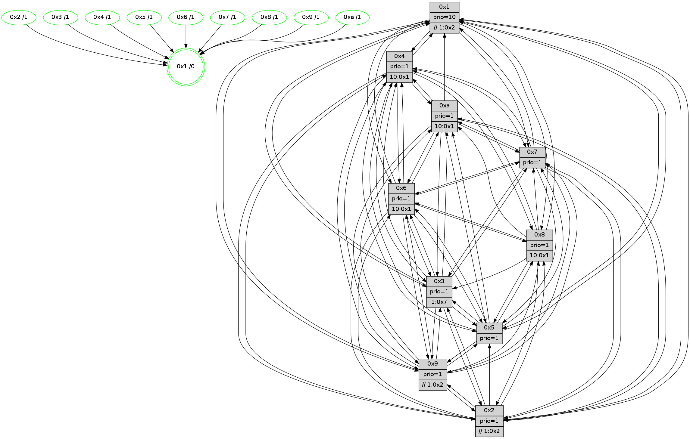

>> << IDX [start] -100 -25 -5 +0 +5 +25 +100 [860.27949214]
 Previous packets
----------------------------------------------------------------------
855.550712 beacon01(faad) #0 coord=01,02,03,04,05,06,07,0a,09,08 cycle=688.0ms assoc
-- color-indic=1 64 ed 21
855.560695 beacon02(faad) #0 coord=01,02,03,04,05,06,07,0a,09,08 cycle=688.0ms assoc 64 7e 10
855.570694 beacon03(faad) #0 coord=01,02,03,04,05,06,07,0a,09,08 cycle=688.0ms assoc 64 04 5d
855.580695 beacon04(faad) #0 coord=01,02,03,04,05,06,07,0a,09,08 cycle=688.0ms assoc 64 73 b7
855.590695 beacon05(faad) #0 coord=01,02,03,04,05,06,07,0a,09,08 cycle=688.0ms assoc 64 09 fa
855.600696 beacon06(faad) #0 coord=01,02,03,04,05,06,07,0a,09,08 cycle=688.0ms assoc 64 87 2d
855.610696 beacon07(faad) #0 coord=01,02,03,04,05,06,07,0a,09,08 cycle=688.0ms assoc 64 fd 60
855.620700 beacon0a(faad) #0 coord=01,02,03,04,05,06,07,0a,09,08 cycle=688.0ms assoc 64 8c 6b
855.640700 beacon08(faad) #0 coord=01,02,03,04,05,06,07,0a,09,08 cycle=688.0ms assoc 64 78 f1
855.652247 [Hello(4): seq=547 sym=5,7,6,2,3,9,8,10,1 sysInfo= stat=5:12,2,4,9/7:9,14,4,5/6:15,11,2,8/2:13,2,15,8/3:12,3,1,6/9:5,15,6,4/8:2,9,4,10/10:13,7,8,7/1:15,11,0,1]
855.655464 [Hello(8): seq=491 sym=5,2,3,4,7,6,9,10,1 sysInfo=hasWarning stat=5:1,5,7,10/2:14,14,0,2/3:15,12,4,10/4:4,3,1,6/7:3,14,6,10/6:2,14,0,8/9:10,6,3,0/10:11,0,5,0/1:4,4,14,0]
855.659513 [Hello(10): seq=480 sym=6,2,3,9,5,7,4,1 sysInfo=hasWarning stat=6:12,12,4,3/2:5,0,15,2/3:11,14,15,7/9:11,4,4,1/5:3,3,6,11/7:1,3,4,5/4:12,7,11,6/1:1,1,2,1]
855.661819 [Color(6) seq=190 @0:0 prio=1 >10.@1,1.@2,1.@3,1.@5]
855.663966 [Color(3) seq=188 @0:0 prio=1 >1.@7]
855.666621 [Hello(7): seq=547 sym=2,3,5,6,4,8,9,10,1 sysInfo=hasWarning stat=2:9,14,12,10/3:7,9,8,10/5:15,0,10,14/6:5,6,8,4/4:1,7,4,0/8:8,11,4,1/9:6,5,7,10/10:1,3,10,9/1:13,7,15,0]
855.669899 [Color(10) seq=168 @0:0 prio=1 >10.@1,1.@2,1.@3,1.@5]
855.671544 [Color(1) seq=228 @0:0 prio=10 >>1.@2,1.@3,1.@5]
855.673849 [Hello(9): seq=491 sym=2,5,3,4,7,6,8,10,1 sysInfo=hasWarning stat=2:14,8,1,0/5:15,5,0,2/3:13,6,0,10/4:4,5,0,6/7:14,4,7,8/6:15,9,6,6/8:13,5,9,1/10:8,12,6,0/1:12,13,1,1]
855.678259 [Color(9) seq=196 @0:0 prio=1 >>1.@2,1.@3,1.@4]
855.682488 [Color(8) seq=203 @0:0 prio=1 >10.@1,1.@2,1.@3,1.@5]
855.685374 [Color(7) seq=153 @0:0 prio=1]
----------------------------------------------------------------------
856.338842 beacon01(faad) #0 coord=01,02,03,04,05,06,07,0a,09,08 cycle=688.0ms assoc
-- color-indic=1 64 f9 4f
856.348825 beacon02(faad) #0 coord=01,02,03,04,05,06,07,0a,09,08 cycle=688.0ms assoc 64 6a 7e
856.358826 beacon03(faad) #0 coord=01,02,03,04,05,06,07,0a,09,08 cycle=688.0ms assoc 64 10 33
856.368827 beacon04(faad) #0 coord=01,02,03,04,05,06,07,0a,09,08 cycle=688.0ms assoc 64 67 d9
856.378825 beacon05(faad) #0 coord=01,02,03,04,05,06,07,0a,09,08 cycle=688.0ms assoc 64 1d 94
856.398827 beacon07(faad) #0 coord=01,02,03,04,05,06,07,0a,09,08 cycle=688.0ms assoc 64 e9 0e
856.408831 beacon0a(faad) #0 coord=01,02,03,04,05,06,07,0a,09,08 cycle=688.0ms assoc 64 98 05
856.428830 beacon08(faad) #0 coord=01,02,03,04,05,06,07,0a,09,08 cycle=688.0ms assoc 64 6c 9f
856.444354 [Hello(2): seq=544 sym=4,5,7,6,3,9,8,10,1 sysInfo=hasWarning stat=4:4,15,13,4/5:1,3,1,0/7:1,9,6,8/6:15,10,1,6/3:6,2,15,4/9:10,5,1,1/8:11,6,13,7/10:7,13,15,7/1:7,8,13,1]
856.447824 [Color(2) seq=193 @0:0 prio=1 >>1.@2,1.@3,1.@5]
856.450571 [Color(4) seq=166 @0:0 prio=1 >10.@1,1.@2,1.@3,1.@7]
856.456589 [Hello(5): seq=548 sym=7,6,4,3,1,9,8,10 asym=2 sysInfo=hasWarning stat=7:0,10,6,7/6:2,7,4,8/4:12,3,7,5/3:8,11,13,8/1:9,11,0,1/9:7,7,4,1/8:10,3,15,7/10:12,10,12,2/2:11,5,5,0]
856.459344 [Hello(3): seq=548 sym=1,7,6,2,4,8,9,10,5 sysInfo= stat=1:13,7,5,0/7:7,11,13,6/6:7,7,2,0/2:0,11,0,8/4:0,4,8,5/8:3,1,12,5/9:11,14,2,8/10:2,3,0,7/5:7,9,13,9]
856.462069 [STC(1) #0.102 tree-change,inconsistent-stability,stable,to-color d=0]
856.463781 [Color(5) seq=201 @0:0 prio=1]
----------------------------------------------------------------------
857.126971 beacon01(faad) #0 coord=01,02,03,04,05,06,07,0a,09,08 cycle=688.0ms assoc
-- color-indic=1 64 45 4a
857.136955 beacon02(faad) #0 coord=01,02,03,04,05,06,07,0a,09,08 cycle=688.0ms assoc 64 d6 7b
857.146954 beacon03(faad) #0 coord=01,02,03,04,05,06,07,0a,09,08 cycle=688.0ms assoc 64 ac 36
857.156955 beacon04(faad) #0 coord=01,02,03,04,05,06,07,0a,09,08 cycle=688.0ms assoc 64 db dc
857.166954 beacon05(faad) #0 coord=01,02,03,04,05,06,07,0a,09,08 cycle=688.0ms assoc 64 a1 91
857.176955 beacon06(faad) #0 coord=01,02,03,04,05,06,07,0a,09,08 cycle=688.0ms assoc 64 2f 46
857.186956 beacon07(faad) #0 coord=01,02,03,04,05,06,07,0a,09,08 cycle=688.0ms assoc 64 55 0b
857.196961 beacon0a(faad) #0 coord=01,02,03,04,05,06,07,0a,09,08 cycle=688.0ms assoc 64 24 00
857.216961 beacon08(faad) #0 coord=01,02,03,04,05,06,07,0a,09,08 cycle=688.0ms assoc 64 d0 9a
857.228263 [STC(2)->1 #0.102 tree-change,inconsistent-stability,stable,to-color d=1]
857.230801 [Hello(4): seq=548 sym=5,7,6,2,3,9,8,10,1 sysInfo= stat=5:13,3,4,9/7:10,15,4,5/6:0,11,2,8/2:13,2,15,8/3:13,4,1,6/9:6,0,6,4/8:3,10,4,10/10:14,8,8,7/1:15,12,1,1]
857.233842 [Hello(10): seq=481 sym=6,2,3,9,5,7,4,1 sysInfo=hasWarning stat=6:13,13,4,3/2:6,1,15,2/3:12,14,15,7/9:12,5,4,1/5:4,4,6,11/7:1,4,4,5/4:13,8,11,6/1:1,2,3,1]
857.236971 [STC(4)->1 #0.102 tree-change,inconsistent-stability,stable,to-color d=1]
857.238450 [STC(3)->1 #0.102 tree-change,inconsistent-stability,stable,to-color d=1]
857.241030 [Color(3) seq=189 @0:0 prio=1 >1.@7]
857.242701 [STC(8)->1 #0.102 tree-change,inconsistent-stability,stable,to-color d=1]
857.243974 [STC(6)->1 #0.102 tree-change,inconsistent-stability,stable,to-color d=1]
857.245942 [Color(6) seq=191 @0:0 prio=1 >10.@1,1.@2,1.@3,1.@5]
857.247835 [STC(9)->1 #0.102 tree-change,inconsistent-stability,stable,to-color d=1]
857.250045 [Color(8) seq=204 @0:0 prio=1 >10.@1,1.@2,1.@3,1.@5]
857.251836 [Color(1) seq=229 @0:0 prio=10 >>1.@2,1.@3,1.@5]
857.253783 [Color(9) seq=197 @0:0 prio=1 >>1.@2,1.@3,1.@4]
857.257730 [Hello(7): seq=548 sym=2,3,5,6,4,9,10,1 sysInfo=hasWarning stat=2:10,15,12,10/3:8,9,8,10/5:0,1,10,14/6:6,6,8,4/4:2,8,4,0/9:6,5,7,10/10:1,3,10,9/1:13,7,0,0]
857.260752 [STC(7)->1 #0.102 tree-change,inconsistent-stability,stable,to-color d=1]
857.263013 [Color(7) seq=154 @0:0 prio=1]
857.267954 [STC(10)->1 #0.102 tree-change,inconsistent-stability,stable,to-color d=1]
857.269921 [Color(10) seq=169 @0:0 prio=1 >10.@1,1.@2,1.@3,1.@5]
----------------------------------------------------------------------
857.915104 beacon01(faad) #0 coord=01,02,03,04,05,06,07,0a,09,08 cycle=688.0ms assoc
-- color-indic=1 64 81 44
857.925086 beacon02(faad) #0 coord=01,02,03,04,05,06,07,0a,09,08 cycle=688.0ms assoc 64 12 75
857.935088 beacon03(faad) #0 coord=01,02,03,04,05,06,07,0a,09,08 cycle=688.0ms assoc 64 68 38
857.945087 beacon04(faad) #0 coord=01,02,03,04,05,06,07,0a,09,08 cycle=688.0ms assoc 64 1f d2
857.955088 beacon05(faad) #0 coord=01,02,03,04,05,06,07,0a,09,08 cycle=688.0ms assoc 64 65 9f
857.965086 beacon06(faad) #0 coord=01,02,03,04,05,06,07,0a,09,08 cycle=688.0ms assoc 64 eb 48
857.975087 beacon07(faad) #0 coord=01,02,03,04,05,06,07,0a,09,08 cycle=688.0ms assoc 64 91 05
857.985091 beacon0a(faad) #0 coord=01,02,03,04,05,06,07,0a,09,08 cycle=688.0ms assoc 64 e0 0e
858.005092 beacon08(faad) #0 coord=01,02,03,04,05,06,07,0a,09,08 cycle=688.0ms assoc 64 14 94
858.016336 [Hello(1): seq=458 sym=4,2,9,5,10,3,6,7 sysInfo=coloring-mode-on,ColoringModeRequestCalled stat=4:11,9,5,0/2:4,15,0,9/9:15,3,1,2/5:0,14,9,3/10:12,8,14,9/3:12,5,15,1/6:12,12,14,8/7:9,9,4,11]
858.025387 [Color(2) seq=194 @0:0 prio=1 >>1.@2,1.@3,1.@5]
858.028279 [Hello(3): seq=549 sym=1,7,6,2,4,9,10,5 sysInfo= stat=1:13,8,6,0/7:8,12,14,6/6:7,8,3,0/2:0,11,1,8/4:1,4,8,5/9:11,15,3,8/10:2,4,1,7/5:7,10,13,9]
858.034193 [Hello(5): seq=549 sym=7,6,4,3,1,9,8,10 sysInfo=hasWarning stat=7:1,11,7,7/6:3,8,5,8/4:13,3,8,5/3:8,12,13,8/1:9,12,0,1/9:8,8,5,1/8:11,4,0,7/10:12,11,13,2]
858.039109 [Color(5) seq=202 @0:0 prio=1]
----------------------------------------------------------------------
858.703233 beacon01(faad) #0 coord=01,02,03,04,05,06,07,0a,09,08 cycle=688.0ms assoc
-- color-indic=1 64 3d 41
858.713217 beacon02(faad) #0 coord=01,02,03,04,05,06,07,0a,09,08 cycle=688.0ms assoc 64 ae 70
858.723216 beacon03(faad) #0 coord=01,02,03,04,05,06,07,0a,09,08 cycle=688.0ms assoc 64 d4 3d
858.733218 beacon04(faad) #0 coord=01,02,03,04,05,06,07,0a,09,08 cycle=688.0ms assoc 64 a3 d7
858.743216 beacon05(faad) #0 coord=01,02,03,04,05,06,07,0a,09,08 cycle=688.0ms assoc 64 d9 9a
858.753215 beacon06(faad) #0 coord=01,02,03,04,05,06,07,0a,09,08 cycle=688.0ms assoc 64 57 4d
858.763217 beacon07(faad) #0 coord=01,02,03,04,05,06,07,0a,09,08 cycle=688.0ms assoc 64 2d 00
858.773220 beacon0a(faad) #0 coord=01,02,03,04,05,06,07,0a,09,08 cycle=688.0ms assoc 64 5c 0b
858.793221 beacon08(faad) #0 coord=01,02,03,04,05,06,07,0a,09,08 cycle=688.0ms assoc 64 a8 91
858.806357 [Hello(4): seq=549 sym=5,7,6,2,3,9,8,10,1 sysInfo= stat=5:14,4,4,9/7:11,0,5,5/6:0,12,3,8/2:13,2,15,8/3:14,5,1,6/9:6,1,7,4/8:4,11,5,10/10:14,9,9,7/1:0,13,1,1]
858.809081 [Hello(10): seq=482 sym=6,2,3,9,5,7,4,1 sysInfo=hasWarning stat=6:14,13,4,3/2:6,2,0,2/3:13,14,15,7/9:12,5,4,1/5:5,5,6,11/7:1,4,4,5/4:14,8,11,6/1:2,2,3,1]
858.811457 [Color(1) seq=230 @0:0 prio=10 >>1.@2,1.@3,1.@5]
858.814007 [Color(10) seq=170 @0:0 prio=1 >10.@1,1.@2,1.@3,1.@5]
858.816705 [Hello(8): seq=493 sym=5,2,3,4,7,6,10,1 sysInfo=hasWarning stat=5:3,7,7,10/2:0,0,1,2/3:1,12,4,10/4:6,4,1,6/7:4,0,7,10/6:3,14,1,8/10:11,1,6,0/1:5,5,15,0]
858.819712 [Color(8) seq=205 @0:0 prio=1 >10.@1,1.@2,1.@3,1.@5]
858.821516 [Hello(9): seq=493 sym=2,5,3,4,7,6,8,10,1 sysInfo=hasWarning stat=2:0,9,2,0/5:1,7,0,2/3:15,6,0,10/4:6,7,0,6/7:15,6,8,8/6:15,9,6,6/8:14,6,9,1/10:8,13,7,0/1:13,13,2,1]
858.824650 [Color(3) seq=190 @0:0 prio=1 >1.@7]
858.827028 [Color(9) seq=198 @0:0 prio=1 >>1.@2,1.@3,1.@5]
858.828683 [Hello(7): seq=549 sym=2,3,5,6,4,9,10,1 sysInfo=hasWarning stat=2:10,0,13,10/3:9,9,8,10/5:1,2,10,14/6:7,6,8,4/4:3,8,4,0/9:6,5,7,10/10:1,4,11,9/1:14,7,0,0]
858.832329 [Color(7) seq=155 @0:0 prio=1]
----------------------------------------------------------------------
859.491363 beacon01(faad) #0 coord=01,02,03,04,05,06,07,0a,09,08 cycle=688.0ms assoc
-- color-indic=1 64 09 59
859.501345 beacon02(faad) #0 coord=01,02,03,04,05,06,07,0a,09,08 cycle=688.0ms assoc 64 9a 68
859.511345 beacon03(faad) #0 coord=01,02,03,04,05,06,07,0a,09,08 cycle=688.0ms assoc 64 e0 25
859.521346 beacon04(faad) #0 coord=01,02,03,04,05,06,07,0a,09,08 cycle=688.0ms assoc 64 97 cf
859.531345 beacon05(faad) #0 coord=01,02,03,04,05,06,07,0a,09,08 cycle=688.0ms assoc 64 ed 82
859.541346 beacon06(faad) #0 coord=01,02,03,04,05,06,07,0a,09,08 cycle=688.0ms assoc 64 63 55
859.551346 beacon07(faad) #0 coord=01,02,03,04,05,06,07,0a,09,08 cycle=688.0ms assoc 64 19 18
859.561349 beacon0a(faad) #0 coord=01,02,03,04,05,06,07,0a,09,08 cycle=688.0ms assoc 64 68 13
859.581352 beacon08(faad) #0 coord=01,02,03,04,05,06,07,0a,09,08 cycle=688.0ms assoc 64 9c 89
859.592581 [Hello(6): seq=550 sym=2,3,5,4,7,9,8,10,1 sysInfo= stat=2:13,3,14,7/3:9,9,7,8/5:7,15,7,11/4:14,1,15,0/7:2,15,2,4/9:7,0,6,1/8:0,1,0,0/10:6,3,11,8/1:1,7,14,1]
859.595539 [Hello(3): seq=550 sym=1,7,6,2,4,9,10,5 sysInfo= stat=1:13,8,6,0/7:9,13,14,6/6:7,8,3,0/2:0,11,1,8/4:2,4,8,5/9:11,0,3,8/10:2,4,1,7/5:8,11,13,9]
859.599410 [Color(4) seq=168 @0:0 prio=1 >10.@1,1.@2,1.@3,1.@7]
859.601348 [Hello(1): seq=459 sym=4,2,9,5,3,8,6,7 sysInfo=coloring-mode-on,ColoringModeRequestCalled stat=4:12,9,5,0/2:4,0,0,9/9:0,4,1,2/5:1,15,9,3/3:13,6,15,1/8:0,1,0,0/6:13,12,14,8/7:10,10,4,11]
859.604606 [Hello(2): seq=546 sym=4,5,7,6,3,9,8,10,1 sysInfo=hasWarning stat=4:6,0,14,4/5:3,5,1,0/7:3,11,7,8/6:0,11,2,6/3:8,4,0,4/9:11,7,2,1/8:12,8,14,7/10:9,15,0,7/1:8,10,14,1]
859.608636 [Hello(5): seq=550 sym=7,6,4,3,1,9,8,10 sysInfo=hasWarning stat=7:2,12,7,7/6:3,8,5,8/4:14,3,8,5/3:8,13,13,8/1:10,13,0,1/9:9,9,5,1/8:12,5,0,7/10:13,12,13,2]
859.613588 [Color(5) seq=203 @0:0 prio=1]
859.617628 [Color(2) seq=195 @0:0 prio=1 >>1.@2,1.@3,1.@5]